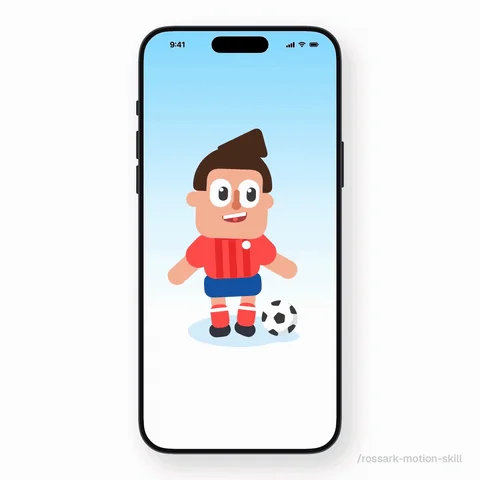
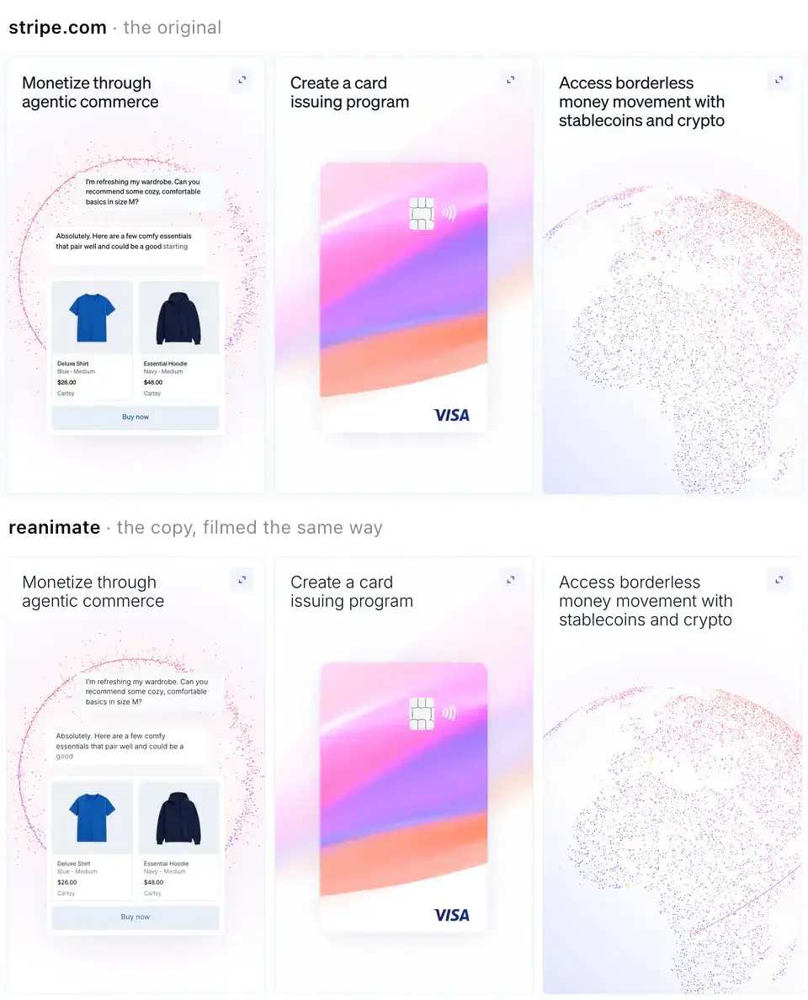
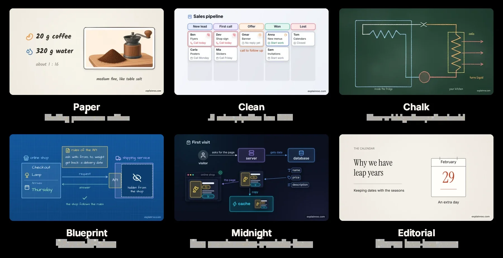
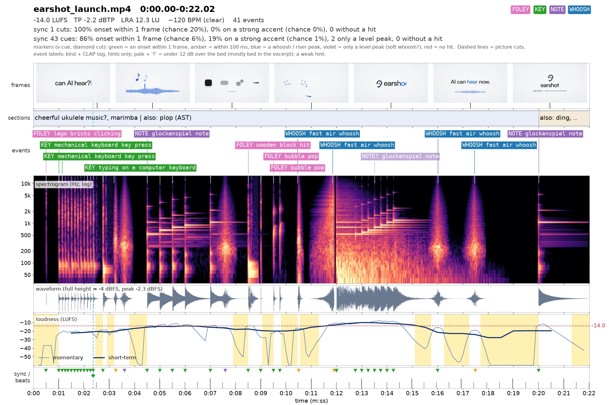

Eight repos.
Eight different jobs.
What each AI video and animation repository actually does, how its machinery works, and which one fits your next project.
Based on the supplied transcript of the AI Labs video, plus independent inspection of all eight repositories. Examples and prompts below are original suggestions unless explicitly labeled. I inspected documentation, skill instructions and selected implementation files; I did not execute the eight production pipelines or benchmark their finished films.
Three combinations in motion
Choose an example, then play it. These are conceptual illustrations of proposed workflows, not recordings of the repositories running. Optional clicks are synthesized locally.
Huashu-motion + Earshot
The agent transfers ordinary clips, audio and reports between tools. Each workflow has one owner for the final composition. Earshot measures audio evidence; a person still judges the final sound.
Choose by the artifact you need
| Repository | What you get | Best reason to choose it |
|---|---|---|
| huashu-motion | Film studio + render engine | Launch films and editable motion graphics |
| rossark-motion-skill | Animation method + small engines | Mascots, illustrations and app interactions |
| take-one | Creative production workflow + tools | Story-led brand films, ads and music videos |
| reanimate | Reverse-engineering + comparison tools | A reference animation rebuilt in your app |
| Argo | CLI + browser recording pipeline | Repeatable product walkthroughs |
| Explainroo | Local narration + explainer renderer | Teaching, technical explainers and narrated diagrams |
| video-director | Direction skill + two QA scripts | Craft and technical checks for code-rendered films |
| Earshot | Audio CLI + Python API + MCP server | Sound selection, synthesis and timing checks |
Begin with Explainroo. Its narration-to-word timing naturally supports diagrams, formulas and step-by-step teaching.
Use Argo. Its browser recording can show the real workflow and result; reconstructed screens have a different evidentiary value.
Try huashu-motion for an editable, music-led product film; Take One when concept development and story deserve more production time.
Use Reanimate to measure a reference’s motion, Rossark for an animated mascot, and Earshot or Video Director for focused inspection.
Terms that make the rest easier
Skill: instructions and supporting files an agent loads for a task. Renderer: software that turns a scene into pixels. Deterministic: the same inputs and time produce the same frame. CLI: command-line interface. TTS: text-to-speech. QA: quality assurance, or explicit delivery checks. FFmpeg: a toolset for processing and encoding audio and video. Contact sheet: many sampled video frames arranged in one image.
Different tools anchor time differently
A film becomes easier to revise when a visual event is tied to something meaningful. Huashu-motion emphasizes musical beats; Explainroo ties pictures to spoken words; Argo uses recorded scene marks; Rossark coordinates animated parts with a common clock; Reanimate compares clocks and motion curves; Earshot measures the audio against the picture.
Music: regular beat markers at an illustrative 120 beats per minute.
Narration: “The light moves along a longer path.”
Real app: scene boundaries at captured browser actions.
A common time axis lets code, words, music and app actions refer to the same instant.
Let t be elapsed time, F the rendering function, n a frame index starting at zero, and r the frame rate in frames per second. A code-rendered frame is F(t), sampled at t = n / r. At 30 frames per second, one frame is about 33.3 milliseconds. A 100-millisecond sound delay is about three frames—easy to miss in a source-code review and obvious in a sharp visual hit.
No repository sections match. Clear the filter to show all eight.
huashu-motion
A product launch film, scored to the beat
Build an editable film from your product’s real materials, with music and cuts designed together. The useful feature is the feedback loop: you can point at a specific frame and object, then ask the agent to change that place.
What it does
Creates launch films, data stories and talking-head overlays. It has a local preview studio, editable values, frame comments and exports such as MP4, GIF and transparent video. Treat the video’s description of it as a “Claude Motion clone” as a comparison of workflow, not evidence of official affiliation or full feature equivalence.
How it works
- The agent collects logos, fonts, colors, wording and screenshots, then proposes three visual directions.
- A film is an
index.htmlcomposition. Browser graphics libraries draw the imagery on a controlled timeline. - For a launch film, the agent writes music in ABC notation, a text format for notes and rhythm. Scene marks connect the score to the edit. Instruments are synthesized or played from an optional sample pack.
- The browser renders frames; FFmpeg encodes the movie and soundtrack. Comments carry the time, selected object and source location, letting revisions target a precise element.
What the repository adds to the video
The implementation contract requires stable object IDs, timeline scene labels, locally stored assets and deterministic time. Its checks cover covered or cut-off text, dead time and single-frame artifacts. The README explicitly says the agent cannot hear the result: an energy curve or spectrogram supports checking, but a final listen remains necessary.
Start and limitations
Requires Node 22+, Chrome/Chromium/Edge and FFmpeg. The author reports testing only on macOS. Optional instrument samples are about 55 MB; narration has additional dependencies. Local music generation needs no paid media API, but the coding agent still has its own usage costs. It draws graphics; it does not generate filmed people or live-action footage by itself. A small end signature is enabled by default and can be disabled.
npx skills add alchaincyf/huashu-motion/huashu-motion Create a 25-second launch film for my 3D ocean project. Use the actual ocean render and its real controls. Give me three directions, keep claims factual, and make the strongest visual reveal land with the music. Deliver the MP4 and editable source.
My assessment: a strong candidate when you want a polished product announcement with direct frame feedback. Windows setup is an experiment until its dependencies and a short export pass locally.
Research: README · Implementation / instructions · Repository
rossark-motion-skill
Drawings that act, breathe and react
Make a drawing behave like a living subject inside an application. Its central problem is believable motion: coordinated timing, real joints and smooth movement between poses.
What it does
Animates mascots, characters, icons, logos, plants, cloth, weather and small scenes. Unlike a launch-film tool, its natural deliverable is animation code integrated into your app. Offline video export is also demonstrated.
How it works
- Split the drawing into parts and identify pivots: a head turns at the neck; a plant bends from its base.
- Drive the scene from one clock. Different parts can have deliberate phase delays while still sharing the same time reference.
- Blend through key poses instead of stopping at every pose. Add quiet idle motion, eye tracking and follow-through: hair or forearms continue slightly after the main body.
- Use
MOTION.mdbeside the art to preserve project constraints. Inspect frame sheets and, when useful, measure the reference’s edges and colors.

What the repository adds to the video
The bundled engines target React Native, a framework for native mobile apps, and SwiftUI, Apple’s interface framework. React Native uses SVG drawing and Reanimated; SwiftUI uses TimelineView and Canvas. The method can be adapted to the web, but the supplied templates are not a universal website animation package. The instructions also pause animation when hidden and respect reduced-motion preferences.
Start and limitations
npx skills@latest add rossark0/rossark-motion-skillIt needs usable artwork or code that can draw it, plus your target app’s toolchain. Installing the skill does not install the whole mobile development environment. The shown Swift demo renderer targets macOS 14+; you cannot run that Apple toolchain directly on Windows. The small engine supports animation craft, not general photorealistic video generation.
Use rossark-motion-skill to animate the tutor mascot in my learning app. Give it subtle idle motion, a restrained success reaction and a helpful retry reaction. Use one clock, preserve the artwork, pause off screen, and support reduced motion.
My assessment: the most relevant of the eight for a reactive tutor character or mobile-app illustration. Choose it for in-app behavior; use a film tool separately if you need a narrated launch movie.
Research: README · Implementation / instructions · Repository
take-one
A short-film studio with a fresh reviewer
Turn a short request into a story-led film: concept, storyboard, imagery, sound, edit, review and accompanying social copy. Its distinction is the production process and independent review.
What it does
Targets product launches, advertisements, brand stories and music videos. It can build entirely from code, incorporate real product captures, or use optional paid image, video, voice and music services.
How it works
- The agent studies the brand and proposes a concept, timed storyboard, production route and expected costs.
- It works through twelve creative jobs, including writer, art director, composer and editor. The README explicitly says these are jobs, not twelve separate agents: one session does most of the work.
- For code-rendered content, a web page draws the frames as a function of time; headless Chrome captures them and FFmpeg creates the film. For product stories it can operate and capture the real product after you handle login.
- A fresh reviewer, without the production context, scores the cut. Below-threshold results return for revision, up to three review rounds. A local review room supports notes attached to frames.
What the repository adds to the video
The author estimates roughly 0.4–0.7 million tokens and one to two hours for a 30-second film made in one session. These are workload estimates, not a service-level promise. The prominent sample used paid media and many takes; code-only output should not be assumed to look like that sample’s filmed-looking people.
Start and limitations
Requires Claude Code, Node 18+, Chrome and FFmpeg; only macOS has been tried according to the README. Its documented installation below is global. Remove -g and select project scope if you prefer a local skill installation; adjust the doctor path to the actual installed location.
npx skills add talsiach/take-one -g -a claude-code
bash ~/.claude/skills/take-one/scripts/doctor.sh/take-one Make a 30-second story about a learner using Tutor-in-a-Box to understand one physics concept. Use real working product captures. Code-only media route; no paid generation services. Show the timed storyboard and estimate usage before building. Deliver editable source, MP4 and the reviewer’s remaining criticisms.
My assessment: promising for a deliberate launch campaign; expensive in time and model context for a quick disposable clip. Its strongest lesson is explicit production stages with a reviewer who sees only the finished work.
Research: README · Implementation / instructions · Repository
reanimate
Measure a reference, reproduce its motion
Study an existing animation, implement the motion in your project, then compare recordings until the differences are small. Its output is working animation code plus comparison evidence.
What it does
Accepts a live site, recording, video, GIF or Lottie animation file. It can recreate a hero entrance, hover interaction, loader, marquee or a more complex Canvas/WebGL scene. This is NiazMorshed2007/reanimate, not the unrelated Haskell library with the same name.
How it works
- Capture the reference at a fixed viewport and frame rate, with repeatable interaction triggers such as hover or scrolling.
- Record element positions and declared browser animations. Optional graphics tracing records drawing calls and animated values in Canvas, WebGL or WebGPU scenes.
- Build a property-by-property motion specification: start time, duration, range, easing and stagger. Implement it with the project’s existing CSS or animation library.
- Record the implementation under the same conditions. Compare timing, curves and frames, fix the largest mismatch, and report unresolved differences after the iteration limit.

What the repository adds to the video
Default matching targets motion, with a documented timing tolerance of 80 milliseconds. “Match exactly” also targets appearance, with a stated mean pixel mismatch limit of 2%. These are the tool’s acceptance criteria; examples reporting zero mismatch are author results on specific captures, not a guarantee on arbitrary sites. Seeded randomness and a virtual clock improve repeatability, although worker clocks and some sources remain problematic.
Start and limitations
npx skills add NiazMorshed2007/reanimate -gRequires Bun 1.1+ on macOS or Linux; Windows is untested. The first run downloads FFmpeg and Chromium, about 250 MB together. No media API key is required. Login pages, YouTube and Loom cannot be recorded directly: supply a local screen recording. Fonts, textures, artwork and code captured from another site retain their owners’ rights; motion analysis does not grant reuse rights.
/reanimate Study the motion in this local ocean-reference.mp4 from 0:03 to 0:07. Reproduce the camera easing and transition rhythm in my own ocean scene. Use my assets and colors. Deliver before/after comparison sheets, timing errors and a list of what remains unmatched.
My assessment: especially relevant to improving your ocean and other visual builds: replace “make it feel like this” with measurable timing and movement differences. WSL is a possible Windows experiment, not verified support.
Research: README · Implementation / instructions · Repository
Argo
Record the real app and narrate the result
Record an actual web application being used, with narration and highlights timed to the walkthrough. Think of it as a reproducible screen-demo build pipeline.
What it does
Produces product demos from browser automation scripts. It adds voiceover, captions, overlays, focus effects and exports. It can also import an existing recording for post-production. Its natural input is a working app and a repeatable sequence of actions.
How it works
- Write a
.demo.tsscript using Playwright, a library for controlling a real browser. - Write a
.scenes.jsonmanifest: scene names, spoken text and overlays. Generate the narration with a selected text-to-speech engine. - Call
narration.mark('scene-name')at each scene boundary. Hold the relevant screen long enough for its measured narration clip. - Argo aligns the clips to recorded timestamps. FFmpeg combines the screen recording and narration into an MP4, with subtitles, chapter markers and a scene report.
Open app → create item → show result
intro → action → outcome
Each has narration + overlays
Shared scene IDs connect actions to spoken clips.
What the repository adds to the video
Local Kokoro speech is optional, not bundled into the minimal core install. Other engines include cloud providers and local alternatives. The package manifest inspected lists version 0.42.1 and Playwright peers at 1.59+. Argo supports viewport-native variants: re-record a responsive app at portrait dimensions rather than merely cropping a landscape recording.
Start and limitations
Requires Node 20+, Playwright 1.59+ and FFmpeg. This local-voice starter avoids installing a cloud voice SDK:
npm i -D @argo-video/cli
npm i kokoro-js@1
npx argo init
npx argo doctor
# After configuring the app URL, browser and demo files:
npx argo pipeline exampleThe README estimates about 27 MB for core dependencies and roughly 435 MB for a project with Kokoro installed; browser/model caches and your recordings add more. Browser actions must succeed and selectors must stay valid. A demo can be visually convincing while the underlying app is broken elsewhere. Replay the important path and verify its result. Windows FFmpeg installation is documented, but I did not run a Windows end-to-end export.
Use Argo to record my real app creating a lesson, answering one question and displaying feedback. Use local Kokoro narration and clearly visible text. Make scene IDs match the browser script, verify the saved result, and export a landscape MP4 with subtitles.
My assessment: the clearest choice for showing that your software actually works. Especially useful for GitHub README demos that can be regenerated after UI changes.
Research: README · Package and dependency manifest · Repository
Explainroo
Pictures arrive on the words that explain them
Turn an explanation into narrated diagrams, with the pictures synchronized to specific spoken words. It is the closest fit here for a physics or AI mini-lesson.
What it does
Creates explainers with text, diagrams, charts, formulas, code, screenshots and video clips. Outputs include a narrated MP4, subtitle files, chapters and a cover image. Multiple looks and aspect ratios are built in.
How it works
- The agent writes
script.md, which contains narration, andscenes.js, which draws the imagery. - Kokoro, a local text-to-speech model, generates the voice. Whisper, a speech-recognition model, estimates when the words occur in the recording.
- A visual can be anchored to a word or marker rather than a guessed number of seconds. The source API includes
s.cue('word')and word-basedatvalues. - Chrome draws the frames. The renderer adds background music, sound effects and voice ducking—lowering music while speech plays—then FFmpeg encodes the result.

What the repository adds to the video
The current README describes six looks and 54 voices across eight languages; an older search-index copy still showed five looks and 28 voices. This guide uses the directly fetched current files. Product demos may reconstruct screens from the app’s design and source; real recordings can also be embedded. A reconstructed interaction is an illustration, not proof that the app executed it.
Start and limitations
git clone https://github.com/vincentsch/explainroo.git
cd explainroo
npm install
node bin/explainroo.js doctor --fetchNeeds Node 20.11+, FFmpeg and Chrome/Chromium; initial English speech models total about 400 MB. No GPU is required. The current README reports tests on Linux, macOS and Windows. Other languages may require extra phonemization dependencies. Local voices need no paid API; optional ElevenLabs speech or AI illustrations do. Layout and speech checks catch defects, but speech recognition can mishear homophones, and mathematical truth needs separate verification.
Using Explainroo, make a 45-second dark-mode explanation of why a light clock leads to time dilation. Define the symbols before using them, distinguish the two observers, and synchronize the moving light pulse to the narration. Use diagrams only. Verify the equation and assumptions before rendering.
My assessment: the best first experiment for your educational interests and Windows setup. Start with one verified concept and a 20–45 second explanation rather than a whole lecture.
Research: README · Scene API and authoring workflow · Repository
video-director
Direct the film, then measure the defects
Give a coding agent explicit directing principles, a structured timeline and measurable delivery checks. It is a craft-and-quality layer, not a complete hosted video generator.
What it does
Guides the creation or revision of short code-rendered films, including launch videos, explainers, data stories, illustrated shorts and social reels. The repo emphasizes planning in numbers, deterministic rendering and checks before delivery.
How it works
- The skill defines the brief, timing, text policy, continuity and completion criteria.
check_timeline.pyvalidatestimeline.jsonbefore the film is built. Source checks distinguish errors from warnings.- The agent implements the visuals using an available renderer, such as HTML/Canvas with a browser or Remotion.
qa_video.pymeasures the resulting movie for issues such as first-frame problems, flashes, freezes, loop seams, text readability, loudness and silence. The agent revises specific defects.
Is the hook legible by 3 s?
Do scenes leave gaps?
Do sound cues refer to real beats?
Is frame 0 visible?
Is text readable?
Does audio clip or disappear?
A technical pass makes a film deliverable. Audience response still needs human judgment.
What the repository adds to the video
The timeline checker’s source uses a three-second hook deadline and minimum text-size rules scaled to a 1080-pixel short side. These are craft heuristics for this workflow, not universal laws of film. Its small author-run evaluation reports 28/28 measurable assertions with the skill versus 25/28 without, and a 2–1 blind preference. A later revision improved its own results. With only three briefs and one run per configuration, these findings are preliminary; they are not a model benchmark.
Start and limitations
Copy the inner skill folder into your project. The commands below use Git Bash or another shell with cp:
git clone https://github.com/win4r/video-director.git
mkdir -p .claude/skills
cp -R video-director/video-director .claude/skills/
# With an actual timeline and rendered film available:
python video-director/video-director/scripts/check_timeline.py timeline.json
python video-director/video-director/scripts/qa_video.py film.mp4 --out qa/ --beats timeline.jsonRequires Python 3, NumPy, Pillow and FFmpeg/ffprobe for checks. HTML rendering additionally needs Node, Playwright and Chromium; a rendering engine is not supplied by simply copying the skill. The author primarily targets Claude Code with Opus 5.5, while allowing other capable coding agents. Numerical checks do not establish that the film’s claims are true.
Use video-director to review this existing 25-second product film. Preserve its identity. First validate the timeline, then inspect the rendered MP4. Fix unreadable text, pacing, audio and first-frame defects; report measured changes and any unresolved judgment calls.
My assessment: useful as a checklist and verifier once you have a render pipeline. Avoid having two full production skills rewrite the same timeline; let one build and use the other for focused checks.
Research: README · Timeline checker source · Repository
Earshot
Turn sound into evidence an agent can use
Give an agent structured evidence about sound: what it resembles, when it happens, how loud it is, and how it aligns with the picture. It also supplies tools for designing sounds.
What it does
Analyzes, searches, compares and critiques audio; produces event timelines and annotated sheets; synthesizes effects with code; and serves the tools through a CLI, Python API or MCP—Model Context Protocol, a standard interface through which an agent calls external tools.
How it works
- CLAP, an audio–text representation model, compares sounds with descriptions. An AST Audio Spectrogram Transformer model supplies sound-category tags.
- Signal measurements provide loudness, peaks, event timing and frequency information. The tool relates audio onsets or peaks to cuts and specified visual cues.
sheetcombines frames, event labels, a spectrogram, waveform, loudness and sync markers into one image the agent can inspect.forgesearches code-based sound recipes;fitapproximates a recording as a controllable recipe. The shippedsfxbank andkittools render effects without loading the audio models.

What the repository adds to the video
The inspected package is 0.4.0, with a documented bank of 252 code-generated sounds. The optional real-sound skill assembles soundtracks from licensed recordings. The tool is more than a written “hearing” prompt: the CPU models and signal-processing code produce new evidence. Conversely, its “realness” score is not proof of provenance, authenticity or permission to use a recording.
Start and limitations
Requires Python 3.10+ and FFmpeg/ffprobe. The first model use downloads about 1.1 GB, in addition to the Python environment and CPU PyTorch. Here is a Windows PowerShell adaptation of the repository’s setup:
git clone https://github.com/Leonxlnx/earshot.git
cd earshot
py -3.11 -m venv .venv
.venv\Scripts\python.exe -m pip install torch --index-url https://download.pytorch.org/whl/cpu
.venv\Scripts\python.exe -m pip install -e ".[mcp]"
.venv\Scripts\python.exe -m earshot doctor --load
.venv\Scripts\python.exe -m earshot sheet film.mp4 -o sound-sheet.pngUse another installed Python 3.10+ if 3.11 is unavailable. The adaptation omits optional Gemini and development dependencies. Models stay loaded when using the MCP server; separate CLI processes repeatedly pay model-loading time. Busy mixes can produce uncertain labels. Earshot does not judge narrative taste, emotion, speech content or licensing. Its launch scorecard reflects seven reference films, not every good soundtrack.
Use Earshot to inspect my finished ocean launch video. Identify timing differences between major visual events and sound, check loudness and clipping, and generate an annotated sheet. Suggest restrained fixes. Preserve the narration and report uncertainty in sound labels.
My assessment: the most technically distinctive addition to an existing film workflow. Use it to diagnose and compare; listen yourself before accepting the final mix.
Research: README · Python package manifest · Repository
Windows, costs and sensible combinations
You do not need to buy a GPU to try this category. Most frames are drawn by browser or app graphics code, and local speech/audio inference can run on CPU. Faster hardware can shorten renders, but the first bottleneck is often the agent’s design and revision work.
| Your Windows laptop | Evidence from the sources | Practical interpretation |
|---|---|---|
| Explainroo | Current README reports Linux/macOS/Windows tests; no GPU needed. | Strongest documented starting point here for a local educational explainer. |
| Argo | Windows FFmpeg install is documented; Node/Playwright-based pipeline. | Plausible direct Windows route. Run doctor and export a tiny real demo first. |
| Earshot | README gives Windows Python executable guidance; package declares OS independence. | CPU-friendly architecture, but budget disk for PyTorch plus about 1.1 GB of models. |
| Video Director | Python and FFmpeg checks; renderer is separately provided. | Can be a portable checking layer. I have not validated a full Windows render workflow. |
| Huashu / Take One | Authors report macOS-only testing. | Do not interpret JavaScript portability as verified Windows support. WSL may help but is untested here. |
| Reanimate | macOS/Linux requirements; Windows explicitly untested. | A WSL experiment is more consistent with the documented platform target; GPU/browser details may still fail. |
| Rossark | React Native and SwiftUI templates; demo renderer uses macOS. | Choose the engine matching your app. SwiftUI’s Apple toolchain still requires an Apple environment. |
“Free” has four separate meanings
Open-source code, local rendering, local speech and coding-agent usage are different cost categories. A rough accounting is total cost = agent usage + optional media services + compute/storage + your review time. Local code and voice can remove per-video media-service fees while leaving substantial model usage. The download sizes in this guide refer to different things—model weights, dependencies or assets—and should not be added as if they were comparable full-install totals.
Combine only the pieces you need
| Goal | Main tool | Optional helper |
|---|---|---|
| Physics or AI explanation | Explainroo | Human fact check; Earshot for sound inspection |
| App demonstration | Argo | Video Director’s relevant checks |
| Ocean launch film | Huashu-motion or Take One | Earshot for synchronization; preserve original product captures |
| Reactive tutor mascot | Rossark | Your app’s interaction and accessibility checks |
| Reference-inspired interface motion | Reanimate | Original assets and app-specific performance checks |
These combinations are my recommendations, not verified native integrations. Use one owner for the composition and export; call another tool for a specific measurement. Two production skills can have conflicting file formats, clocks and completion rules.
Three hidden failure modes
- Attractive footage can imply nonexistent functionality. Keep real captures distinct from rebuilt or imagined screens. Check every product claim against working behavior.
- A quality score can optimize the wrong thing. Pixel matching measures resemblance, a loudness pass measures level, and an AI reviewer measures its rubric. None directly measures scientific understanding, brand preference or conversion.
- A reproducible render needs reproducible inputs. Save source, fonts, assets, exact dependency versions, narration, timing data and the source commit. A remote font or changed website can alter tomorrow’s export.
One small test with a clear acceptance bar
My recommendation is a 30-second Explainroo physics explainer. It aligns with your interests, exercises the distinctive word-timing mechanism and has the strongest stated Windows test coverage among the film generators here.
- Pick one claim: for example, what stays invariant in a light-clock time-dilation argument. Write the claim and assumptions before making the visuals.
- Ask for a diagram-led film: define symbols first; use no generated imagery, no unverified product screens and no paid media route.
- Accept only if: the argument is correct, narration is understandable, each reveal lands on its intended words, labels remain readable in a small player and the project can be rendered again from its saved files.
For a second experiment, record a real walkthrough of one of your existing visual projects with Argo. Then use Earshot on the exported clip. That tests a deeper engineering idea: an agent improves more reliably when it can inspect evidence about its output, rather than merely produce another version.
What was researched
The supplied transcript establishes the eight repositories and the presenter’s demonstrations. I independently read each current README through GitHub and inspected the additional file linked below each repository. For Video Director this includes executable validation logic; for Argo and Earshot, dependency manifests. Source comments and published performance results are author claims, clearly identified above. No end-to-end performance or quality claim in this guide is a new benchmark.
Current repository files took precedence over older search-index excerpts. Counts, requirements and compatibility statements are snapshots checked on 2 November 2026. Follow the linked repository for changes before installation.
- AI Labs source video; supplied transcript used for chapter descriptions and the presenter’s outcomes.
- alchaincyf/huashu-motion — README plus the linked implementation/instructions file in its section.
- rossark0/rossark-motion-skill — README plus the linked implementation/instructions file in its section.
- talsiach/take-one — README plus the linked implementation/instructions file in its section.
- NiazMorshed2007/reanimate — README plus the linked implementation/instructions file in its section.
- shreyaskarnik/argo — README plus the linked implementation/instructions file in its section.
- vincentsch/explainroo — README plus the linked implementation/instructions file in its section.
- win4r/video-director — README plus the linked implementation/instructions file in its section.
- Leonxlnx/earshot — README plus the linked implementation/instructions file in its section.
Visual provenance and how to read the evidence
Four visuals are bundled for offline use: a still from Rossark’s Reveal GIF (frame 80), a still from Reanimate’s reference/copy WebP animation (frame 45), Explainroo’s built-in looks image, and Earshot’s launch-film analysis sheet. They come from the authors’ repositories and link to the exact source assets. GIF/WebP still extraction and image recompression were used to keep this HTML compact.
These are source examples, not screenshots from a pipeline run in this session. The timeline demonstration and workflow boxes are explanatory illustrations created for this guide, with invented timings clearly labeled. No AI-generated raster imagery was used. A single frame cannot establish that two animations match over time.
Setup commands are documented commands or explicitly labeled adaptations. They are provided for use on your computer; no repository was installed or executed as part of this research. Source licenses and model, font, sample and captured-asset licenses can differ. Verify the assets you intend to redistribute.